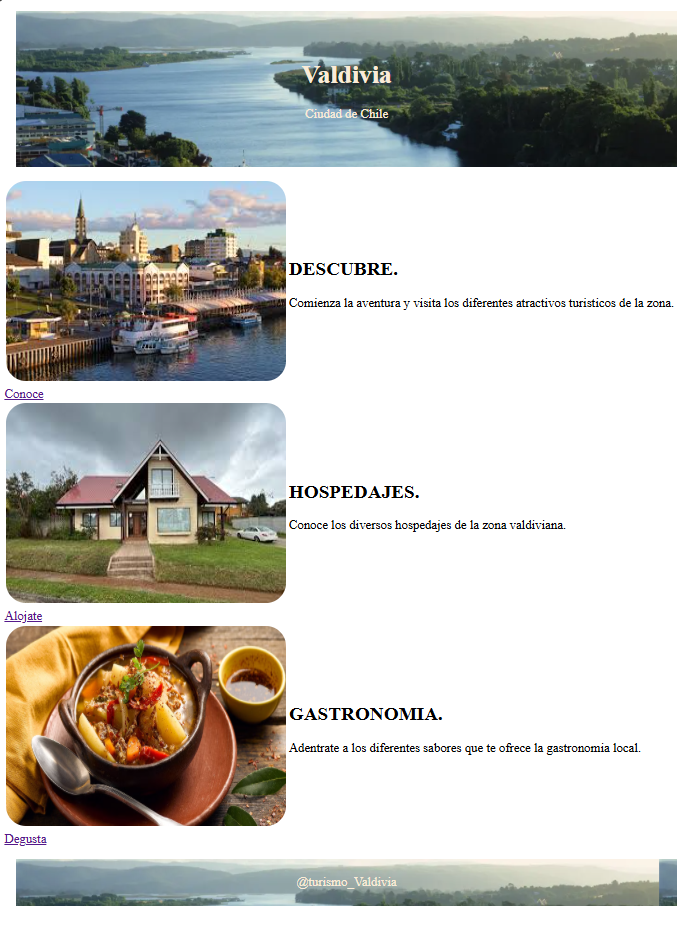

Trabajo Boostrap
Ejercicio de Boostrap que se pone en practica todo lo maprendido. Link

Trabajo Flexbox
Ejercicio de Flexbox. Entregando información del zorro culpeo. Link

Trabajo Css
Ejercicio de Css que se pone en practica los estilos. Se da forma redondiada a las imagenes. Link

Trabajo Html
Ejercicio de Html se crea un curriculum del cineasta Cristopher Nolan. Link